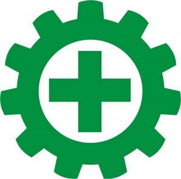
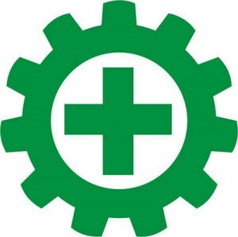

SKILLS
Technical :
Microsoft Office (Word, Excel, Power Point); Google Spreaddsheet; Microsoft PowerBI; Python; tableau; PostgreSQL; MySQL; VS Code; NDT; Inspection; HIRADC; JSA; Analytics.
Languages :
English; Indonesia.
Kota Batam, Batam Center - Kepulauan Riau - 29464 | ( +62 ) 821 7376 1982 |
amalrahmanduya@gmail.com | My Linkedin | My CV | My Portfolio
Dedicated and highly motivated professional with more than 4 years of working experience in Administration, document management and document legality as Notary Staff and more than 1 year in Oil & Gas Industry, steel and iron construction, and manufacturing as Supervisor, Inspection Officer, and NDT Technician who has successfully performed supporting works for Oil & Gas Industry, Onshore, Pipeline, Offshore Platform, Shipping, and Pressurized Tank, etc. Know and understand the basics of OHS, application of OHS inspection, HIRADC management, and JSA management. Have a General OHS Expert certification and other similar certificates.
Dasar Keselamatan dan Kesehatan Kerja (K3) / Inspeksi Keselamatan dan Kesehatan Kerja (K3) / Manajemen Resiko HIRADC / Manajemen Resiko JSA / Perundang-undangan Keselamatan dan Kesehatan Kerja (K3).
Kesehatan dan Keselamatan Kerja (K3) Listrik
Ahli Keselamatan dan Kesehatan Kerja (K3) Umum
Ahli Keselamatan dan Kesehatan Kerja (K3) Umum
Faculty of Social and Political Sciences, Major of Social Welfare
(Quit in 2010 due to economic factor)
Program Study : Social Science | IPS
Microsoft Office (Word, Excel, Power Point); Google Spreaddsheet; Microsoft PowerBI; Python; tableau; PostgreSQL; MySQL; VS Code; NDT; Inspection; HIRADC; JSA; Analytics.
English; Indonesia.
| No. | Company | Tahun | Position | Job Description |
|---|---|---|---|---|
| A. | PT.ANUGERAH MULTIJAYA PERSADA | 2016 - 2017 | NDT Tecchnician fot MT / PT |
|
| Project | |||||
|---|---|---|---|---|---|
| No. | Name | Date | Client | Customer | Location |
| A-1. | JANGKRIK COMPLEX PROJECT | Installation Aids Fabrication 2nd Campaign | 21 January 2017 - 26 February 2017 | PT.SECO ENGINEERING INDONESIA | SAIPEM INDONESIA | PT.WWE SEA INDONESIA/TAT HONG | Sengkuang, BATU AMPAR – BATAM |
| A-2. | BOOM CRANE SCX 2800 - BARGE TH820 | 19 January 2017 | PT. WWE SEA INDONESIA/TAT HONG | PT. WWE SEA INDONESIA/TAT HONG | |
| SEAFASTENING STOPPER CRANE - BARGE TH819 | |||||
| A-3. | S MITCH BREAKET MAIN TOWING AND EMERGENCY | 23 December 2016 | |||
| A-4. | LASING FOR NEPTUNE PROJECT (CONCRETE MATTRESSES) | 11 July – 13 July 2016 (Continuation) | PT. HANINDO INTI TRADA | HANSA HEAVY LIFT (CARGO SHIP) | |
| 23 June – 29 June 2016 (Continuation) | |||||
| 08 June – 13 June 2016 | |||||
| A-5. | JANGKRIK COMPLEX (EXISTING) | May 2016 | PT. SECO ENGINEERING INDONESIA | SAIPEM INDONESIA | |
| A-6. | JANGKRIK Installation Aids Fabrication (1st Campaign). | April 2016 (Continuation) | |||
| February 2016 | |||||
| --- End of Project --- | |||||
| No. | Project Name | Date | Project Description |
|---|---|---|---|
| 01. | Maven Market Project | January 204 |
|
| 02. | Bike Sharing Dataset | August 2023 |
|
| 03. | NHTSA | May 2023 | National Highway Traffic Safety Administration - USA
|
An organization of nature lovers from FISIP UNPAD which is engaged in outdoor adventure and rescue.
In mid-2009, I was in a newly built mall. There I was enjoying a movie in the cinema, but when the movie was playing for about 15 minutes, suddenly there was a power outage, at that time the mall visitors were shocked by the incident, including me who patiently waited for the electricity to be repaired by the authorized officer. But not long after, a cinema officer entered the room and told the audience to get out of the room immediately because there had been a fire in the mall. Then some authorized officers directed mall visitors to the designated evacuation route. As a member of PANTERA, I took the initiative to help the officers to help evacuate. At that time I happened to be standing near the elevator door, I heard the sound of people asking for help, and at that time it turned out that there were visitors who were trapped in the elevator. I immediately informed the officer that someone was trapped in the elevator, and then helped the officer and his colleagues to help the trapped visitor.
Reading | Design Web (Front End Dev) | Traveling | Sport | Listening Music | Mountaineering | Kuliner.
November 12nd, 2024
Certificate of Audit Internal ISO 9001 in Company
Cert. ID : CERT-BFD09DA6
ISO 9001
December 10th - 11th, 2024
Basics of Occupational Safety and Health / Occupational Safety and Health Inspections
Risk Management HIRADC / Risk Management JSA / Occupational Safety and Health Legislation
Cert. No. : 3174/OL.DK3/BISA/XII/2024
Dasar Keselamatan dan Kesehatan Kerja (K3) / Inspeksi Keselamatan dan Kesehatan Kerja (K3)
Manajemen Resiko HIRADC / Manajemen Resiko JSA / Perundang-undangan Keselamatan dan Kesehatan Kerja (K3).
November 09th, 2024
Certificate of Occupational Health and Safety Electrical
Cert. ID : 071/SERT-K3L/HEC/XI/2024
K3 Listrik
October 28th, 2024
Certificate of General Occupational Safety & Health Expert
Cert. ID : 74321 3257 0022382 2024
Ahli K3 Umum - BNSP
October 22nd, 2024
Certificate of Training General Occupational Safety & Health Expert
Cert. ID : 7095/2210/K3BNSP/NKN/2024
Ahli K3 UUmum - Training
February 17th, 2021
Certificate of NDT ASNT Level II - Magnetic Particle Testing
Cert. ID : MT - 14686
Magnetic Particle Testing
February 17th, 2021
Certificate of NDT ASNT Level II - Liquid Penetrant Testing
Cert. ID : PT - 14686
Liquid Penetrant Testing
November 10th, 2021
Certificate of NDT ASNT Level II - Ultrasonic Testing (Plate and Pipe)
Cert. ID : UT - 14602
Ultrasonic Testing (Plate & Pipe)
November 10th, 2021
Certificate of NDT ASNT Level II - Ultrasonic Testing (Node and Nozzle)
Cert. ID : UT - 1415
Ultrasonic Testing (Node and Nozzle)
March 31st, 2024
Certificate of Ultimate Microsoft Office : Excel, Word, PowerPoint & Access
Cert. ID : UC-a1e0a5d4-a51d-49d8-a8b1-eec30b7bf32e
Microsoft Office
Nov 04 th, 2024
Certificate of Microsoft Office : Word, Excel, PoerPoint
Cert. ID : 7345.28.18861
Microsoft Office
Kelurahan Belian | Kec. Batam Kota / Batam Center | Kota Batam | Prov. Kepulauan Riau. | 29464
+62 821 7376 1982
Copyright 2024 | All Rights Reserved.


 



_page-0001.jpg)
_page-0002.jpg)
_page-0003.jpg)
_page-0004.jpg)
_page-0005.jpg)